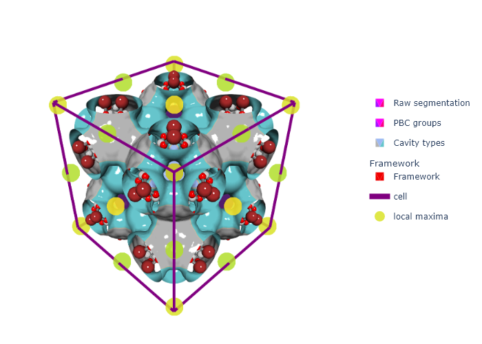

import sys
import os
# * Put your path here
path_to_mgr = os.path.abspath(
'c:/Users/Arun Gopalan/OneDrive - The University of Manchester/my_cloned_repos/mofography')
sys.path.append(path_to_mgr)
import mofography as mgrDownload a subset from MOFDB and Quick Cluster
In this tutorial, we see how to download a subset of structures from the MOFDB database using a wrapper function in mofography. MOFDB is a large database of nanoporous materials, including MOFs and zeolites that is hosted by Northwestern University. https://mof.tech.northwestern.edu/
For a lot of the materials workflows, it is very convenient to have a subset of structures to be used as a starting point, and to be saved as a pandas dataframe, that some of the textural properties of the material along with its crystallographic information. However, downloading large datasets can be cumbersome. Hence, mofography provides a wrapper that can do this asynchronously, meaning, the pages and pages of your search results will be downloaded in parallel, saving a lot of time. Note that at the time of writing, MOFDB itself has a python API that does this, https://github.com/n8ta/mofdb-client, the comparison of speeds of the two codes is not tested, but you are welcome to test it out as well.
Note that in order to avoid excessive strain on the MOFDB website, it is recommended you save the downloaded dataset locally (we will show this at the end) instead of downloading it every time.
Once we have the dataset, we can create ASE atoms objects from it, pick one or more at random and perform a mofography workflo. In this example, we simply perform the quick cluster workflow, but feel free to build one of your own. If you don’t remember what the Quick Cluster workflow does, please go check out the Quick Cluster notebook in the tutorials.
Set paths and import mofography
Now grabbing data from MOFDB using mofography is very easy. There are many options by which you can filter the data, you can find them here: https://mof.tech.northwestern.edu/api
As an example, let’s download all the materials with void fraction between 0.7 and 0.8, and with a largest cavity diameter between 12 and 13 angstroms from the CoREMOF-2019 database. Granted this is only small subset, selected purely for demonstration purposes. It takes about 4 mins on a regular day with this set of parameters
df = mgr.get_data_from_mofdb(params={'vf_min': 0.7, 'vf_max': 0.75,'lcd_min':12,'lcd_max':14, 'database':'CoREMOF 2019'})c:\Users\Arun Gopalan\OneDrive - The University of Manchester\my_cloned_repos\mofography\mofography\data.py:126: RuntimeWarning: coroutine 'ClientSession.close' was never awaited
session.close()
RuntimeWarning: Enable tracemalloc to get the object allocation traceback
Unclosed client session
client_session: <aiohttp.client.ClientSession object at 0x0000029EEACAC0A0>
Unclosed connector
connections: ['[(<aiohttp.client_proto.ResponseHandler object at 0x0000029EED3DCA00>, 9870.64)]']
connector: <aiohttp.connector.TCPConnector object at 0x0000029EEC0C9430>Let’s look at the first few rows of this dataframe
df.head(10)| id | mofid | mofkey | hashkey | name | void_fraction | surface_area_m2g | surface_area_m2cm3 | pld | lcd | ... | pore_size_distribution | database | batch_number | elements | cif | url | adsorbates | heats | isotherms | mofdb_version | |
|---|---|---|---|---|---|---|---|---|---|---|---|---|---|---|---|---|---|---|---|---|---|
| 0 | 173921 | None | None | c83f3cb36e0bdad5ead5471ad8a1b89225c7fb6f5504e1... | acs.inorgchem.6b02413_ic6b02413_si_002_clean | 0.7400 | 2730.07 | 2195.74 | 6.88163 | 13.3773 | ... | None | CoREMOF 2019 | 41 | [] | data_image0\n_cell_length_a 27.546\n_cel... | /mofs/173921.json | [{'id': 80, 'InChIKey': 'IJGRMHOSHXDMSA-UHFFFA... | [] | [{'batch_number': 41, 'adsorbates': [{'id': 80... | dc8a0295db |
| 1 | 173987 | None | None | 79e851559c2af43b378a63b4b468ccadf6804dd517e3d2... | AGABIU_clean | 0.7402 | 2773.67 | 1794.91 | 10.82740 | 12.5710 | ... | None | CoREMOF 2019 | 41 | [] | data_image0\n_cell_length_a 18.605\n_cel... | /mofs/173987.json | [{'id': 80, 'InChIKey': 'IJGRMHOSHXDMSA-UHFFFA... | [] | [{'batch_number': 41, 'adsorbates': [{'id': 80... | dc8a0295db |
| 2 | 174106 | None | None | 70afd8ccd600fd030504ce0c97919d5110cebead9459fa... | ANOMOG_clean | 0.7198 | 2698.05 | 2116.78 | 5.50166 | 12.8003 | ... | None | CoREMOF 2019 | 41 | [] | data_image0\n_cell_length_a 32.461\n_cel... | /mofs/174106.json | [{'id': 80, 'InChIKey': 'IJGRMHOSHXDMSA-UHFFFA... | [] | [{'batch_number': 41, 'adsorbates': [{'id': 80... | dc8a0295db |
| 3 | 174196 | None | None | 29a7e26bd38915ad1c147d2088d54906bffb579ec86021... | ASINEX_clean | 0.7014 | 2801.34 | 1848.81 | 7.27061 | 12.5357 | ... | None | CoREMOF 2019 | 41 | [] | data_image0\n_cell_length_a 74.91\n_cell... | /mofs/174196.json | [{'id': 80, 'InChIKey': 'IJGRMHOSHXDMSA-UHFFFA... | [] | [{'batch_number': 41, 'adsorbates': [{'id': 80... | dc8a0295db |
| 4 | 174197 | None | None | e2eb2e4b54ff5bc14d64019746578c77fe71402d8a8eaa... | ASINIB_clean | 0.7130 | 2773.85 | 1847.56 | 7.22634 | 12.4005 | ... | None | CoREMOF 2019 | 41 | [] | data_image0\n_cell_length_a 75.033\n_cel... | /mofs/174197.json | [{'id': 80, 'InChIKey': 'IJGRMHOSHXDMSA-UHFFFA... | [] | [{'batch_number': 41, 'adsorbates': [{'id': 80... | dc8a0295db |
| 5 | 174278 | None | None | 5842c228d724798a90bc4599997bd3d766e1f4a42995c9... | AVIVUW_clean | 0.7162 | 2491.03 | 1817.90 | 6.91892 | 12.0408 | ... | None | CoREMOF 2019 | 41 | [] | data_image0\n_cell_length_a 22.963\n_cel... | /mofs/174278.json | [{'id': 80, 'InChIKey': 'IJGRMHOSHXDMSA-UHFFFA... | [] | [{'batch_number': 41, 'adsorbates': [{'id': 80... | dc8a0295db |
| 6 | 174294 | None | None | c2eeca1b812f60d10f8e08b7e6d31126b754d4039c9c76... | AWASEY_clean | 0.7186 | 1646.54 | 1906.22 | 7.26209 | 12.0509 | ... | None | CoREMOF 2019 | 41 | [] | data_image0\n_cell_length_a 30.332\n_cel... | /mofs/174294.json | [{'id': 80, 'InChIKey': 'IJGRMHOSHXDMSA-UHFFFA... | [] | [{'batch_number': 41, 'adsorbates': [{'id': 80... | dc8a0295db |
| 7 | 174429 | None | None | 594e605ccc2636780d8a4d1047ec910d12c302481211a5... | BAZJET_clean | 0.7420 | 3450.50 | 2143.77 | 12.10120 | 13.3702 | ... | None | CoREMOF 2019 | 41 | [] | data_BAZJET_clean\n_audit_creation_date ... | /mofs/174429.json | [{'id': 80, 'InChIKey': 'IJGRMHOSHXDMSA-UHFFFA... | [] | [{'batch_number': 41, 'adsorbates': [{'id': 80... | dc8a0295db |
| 8 | 174549 | None | None | 2e72bfca4ff457bde255581761a55cc102f95820e003f4... | BINCUY_manual | 0.7246 | 3760.71 | 2196.14 | 8.62623 | 13.3117 | ... | None | CoREMOF 2019 | 41 | [] | data_BINCUY_clean_b\n_audit_creation_date ... | /mofs/174549.json | [{'id': 80, 'InChIKey': 'IJGRMHOSHXDMSA-UHFFFA... | [] | [{'batch_number': 41, 'adsorbates': [{'id': 80... | dc8a0295db |
| 9 | 174550 | None | None | 47936b6cf988f16f2f51b47970dad99122035c3190cd0d... | BINDAF_manual | 0.7212 | 3638.73 | 2185.42 | 8.49712 | 13.1432 | ... | None | CoREMOF 2019 | 41 | [] | data_BINDAF_clean_b\n_audit_creation_date ... | /mofs/174550.json | [{'id': 80, 'InChIKey': 'IJGRMHOSHXDMSA-UHFFFA... | [] | [{'batch_number': 41, 'adsorbates': [{'id': 80... | dc8a0295db |
10 rows × 21 columns
df.columnsIndex(['id', 'mofid', 'mofkey', 'hashkey', 'name', 'void_fraction',
'surface_area_m2g', 'surface_area_m2cm3', 'pld', 'lcd', 'pxrd',
'pore_size_distribution', 'database', 'batch_number', 'elements', 'cif',
'url', 'adsorbates', 'heats', 'isotherms', 'mofdb_version'],
dtype='object')Write dataset to file
Since what you have is a pandas dataframe, you can save it to a file for the future, using any of thre pandas write functions. For example, to save as a feather file use the following code
# df.to_feather('mofdb_data.feather')Create ASE atoms objects
Since all the calculations in mofography start with an ASE atoms, object, let’s convert make a list of ASE atoms objects for all the materiasl in this dataframe.
atoms_list = mgr.atoms_from_mofdb_df(df)c:\Users\Public\anaconda3\envs\jl_env\lib\site-packages\ase\io\cif.py:401: UserWarning: crystal system 'triclinic' is not interpreted for space group Spacegroup(1, setting=1). This may result in wrong setting!
warnings.warn(
c:\Users\Arun Gopalan\OneDrive - The University of Manchester\my_cloned_repos\mofography\mofography\data.py:162: VisibleDeprecationWarning: Creating an ndarray from ragged nested sequences (which is a list-or-tuple of lists-or-tuples-or ndarrays with different lengths or shapes) is deprecated. If you meant to do this, you must specify 'dtype=object' when creating the ndarray.
return np.array(atoms_list)We can now do a workflow on one or more of this atoms objects, parallelize them whichever way we want and whatnot. Let’s save that for another tutorial. For the time being, let’s just pick one at random and run the quick cluster workflow on it and visualize
If you don’t remember what the quick cluster workflow does, pleae go back and refer to the Quick Cluster notebook in the docs.
import random
index = random.randint(0,len(atoms_list)-1)
mat_atoms = atoms_list[index]
mat_updated = mgr.update_with_covalent_bonds(mat_atoms)
Let’s see what we chose
df.loc[index]id 185372
mofid None
mofkey None
hashkey e230ec24f916fdeb2d390511a386915a1d61ed57f6282f...
name ZACHIX_clean
void_fraction 0.7114
surface_area_m2g 2396.22
surface_area_m2cm3 2133.37
pld 6.50331
lcd 13.1433
pxrd None
pore_size_distribution None
database CoREMOF 2019
batch_number 41
elements []
cif data_image0\n_cell_length_a 26.232\n_cel...
url /mofs/185372.json
adsorbates [{'id': 80, 'InChIKey': 'IJGRMHOSHXDMSA-UHFFFA...
heats []
isotherms [{'batch_number': 41, 'adsorbates': [{'id': 80...
mofdb_version dc8a0295db
Name: 125, dtype: objectPerform quick cluster
Now, let’s run the quick cluster workflow on this atoms object
figures = mgr.quick_cluster(mat_atoms, spacing=0.5, h=0.5)c:\Users\Public\anaconda3\envs\jl_env\lib\site-packages\ase\atoms.py:967: VisibleDeprecationWarning:
Use get_global_number_of_atoms() instead
c:\Users\Arun Gopalan\OneDrive - The University of Manchester\my_cloned_repos\mofography\mofography\analyze.py:345: VisibleDeprecationWarning:
Creating an ndarray from ragged nested sequences (which is a list-or-tuple of lists-or-tuples-or ndarrays with different lengths or shapes) is deprecated. If you meant to do this, you must specify 'dtype=object' when creating the ndarray.
c:\Users\Arun Gopalan\OneDrive - The University of Manchester\my_cloned_repos\mofography\mofography\visualize.py:763: UserWarning:
Optimal rotation is not uniquely or poorly defined for the given sets of vectors.
No node props provided, using default set: [position, scaled_position, element and atomic_number]
No edge properties provided. Use the default set: [bond_order, bond_type]
isomorphic aromatic cycles is None, trying to calculate
No return objects specified, possible options to pass in list_return_strings are:
dict_keys(['ase_atoms', 'spacing', 'mask_thickness', 'h', 'compactness', 'zoom_ratio', 'wall_thickness', 'isoval', 'bins', 'block_size', 'a', 'b', 'c', 'density', 'distance_threshold', 'minimum_overlap_fraction', 'make_figures', 'renderer', 'use_energy_for_clustering', 'sample_fraction', 'cscale', 'return_these_vars', 'np', 'inspect', 'covalent_radii', 'ase', 'da', 'zoom', 'regionprops', 'go', 'px', 'update_with_covalent_bonds', 'dgrid_from_atoms', 'regions_from_dgrid', 'apply_pbc', 'get_rag_from_regions_and_grid', 'add_pbc_to_rag', 'add_psd_to_rag', 'add_psd_to_rag_with_pbc', 'add_clustering_to_rag_pca', 'clustering_grid_from_regions', 'add_clustering_to_rag_energy', 'add_vdw_hist_to_rag', 'mix_lorentz_berthelot', 'plot_surface_dgrid', 'plot_framework_as_mesh', 'plot_cell', 'plot_maxima', 'plot_psds', 'white_layout', 'plot_vdw_hists', 'mat_updated', 'radii', 'grid', 'regions', 'maxima', 'maxima_radii', 'pbc_groups', 'regions_pbc', 'rag', 'props', 'regions_cluster', 'fig_vdw', 'cluster_obj', 'csd_traces', 'surface_trace', 'surface_trace_pbc', 'surface_trace_cluster', 'frame_trace', 'cell_trace', 'maxima_trace', 'fig_full_visual', 'frame', 'args', '_', 'values'])
Returning the figures if make_figures=Trueit works!! Let’s visualize the results, after changing the colors of the clusters to something more pleasing to the eye
Please feel free to change the ‘renderer’ to ‘notebook_connected’ if you’d like an interactive plot in the notebook, or to ‘browser’ for the same in a browser tab.
import plotly.express as px
cscale = px.colors.qualitative.Pastel_r
figures[0].data[2]['colorscale'] = cscale
figures[0].show(renderer='png')